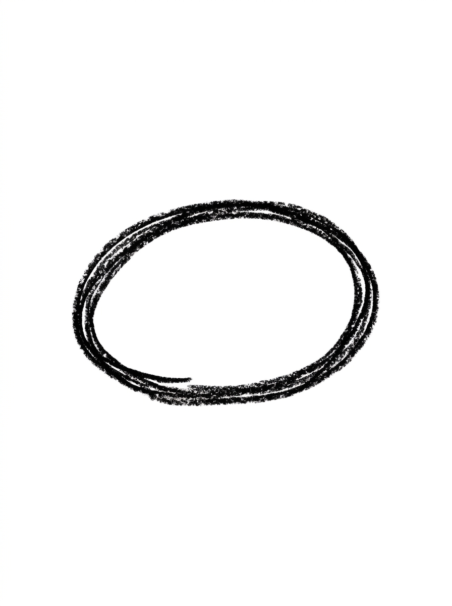
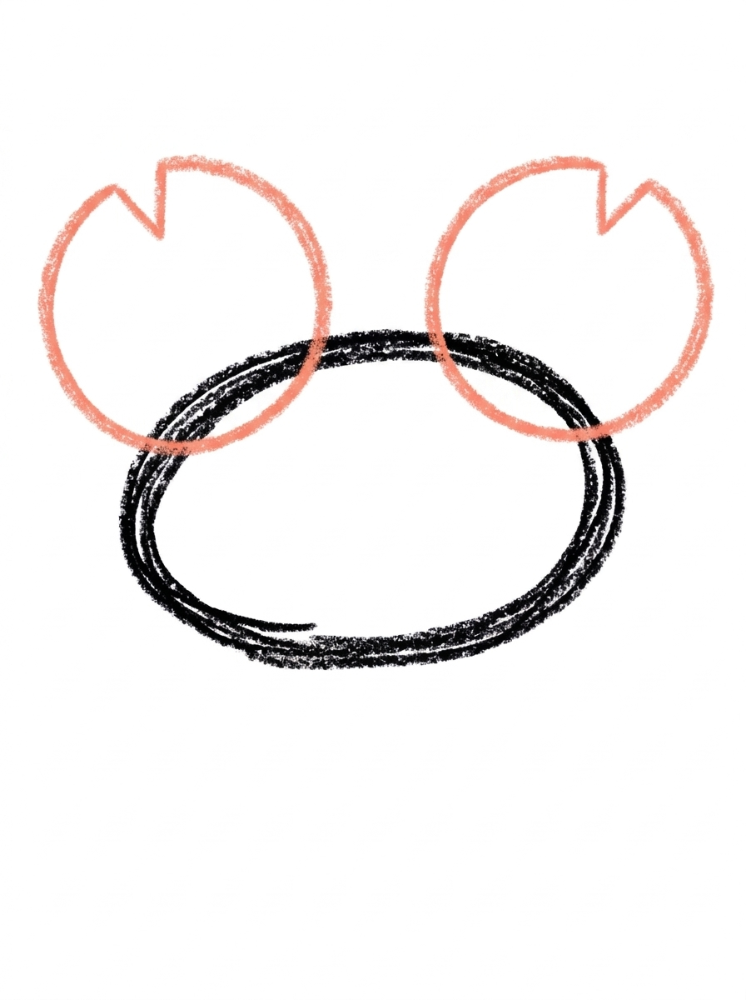
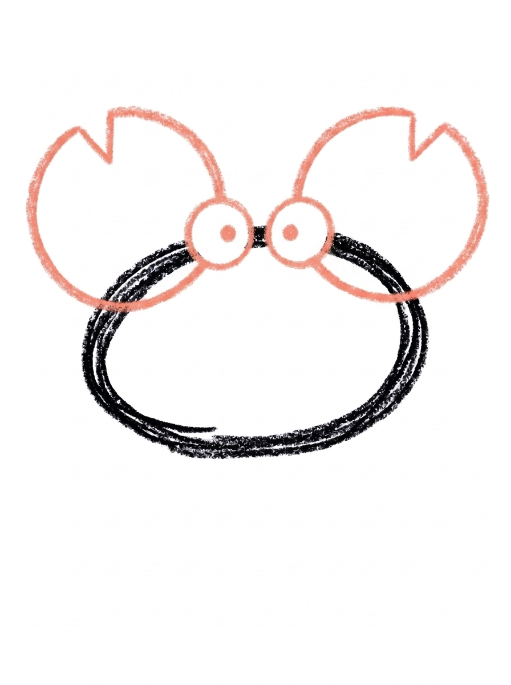
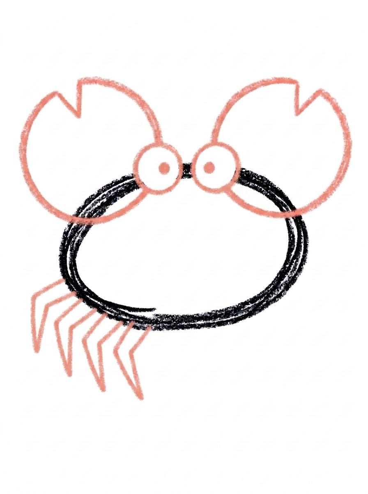
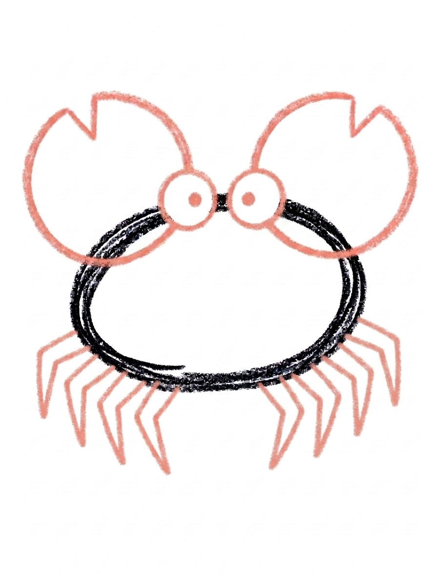
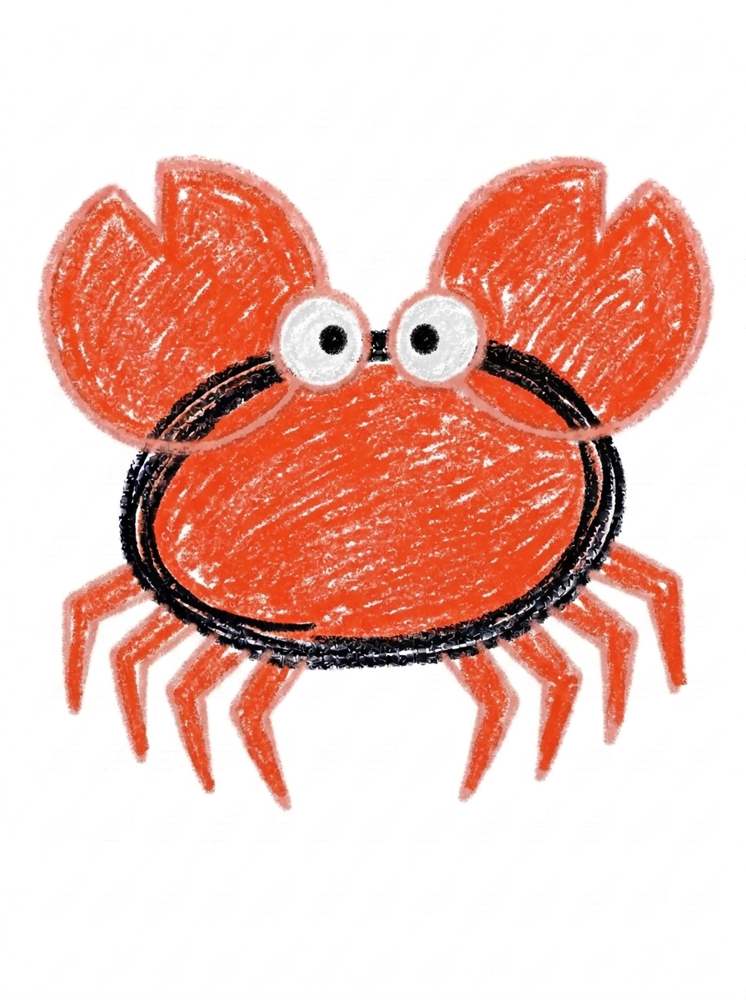

Crab Drawing for Kids How to Draw A Crab in 6 Easy Steps
Quick Answer
Draw a crab in six easy steps: a wide oval body, two big claws with notches, dot eyes on top, then four pointy legs on the left and four on the right. Color everything bright red-orange. Made for ages 3 and up — free printable, no signup needed, just print and draw.
At a Glance
- Subject: How to draw a crab
- Ages: 3+
- Steps: 6 steps
- Time: ~15 min
- Difficulty: Easy
- Supplies: Paper, crayons
Crabs look like a lot of legs and claws, but this one is secretly simple — it's built from one wide oval, two big circles, and pointy legs you can count as you draw. If your child can draw an oval and a zigzag, they can draw this cheerful crab.
✏️ Draw Your Crab in 6 Easy Steps
One step per box — this step by step crab drawing shows each new part in a different color so kids can see exactly what changed.
Step 1: The Body

Draw one wide oval, a little flatter on the bottom. That is the crab's body.
Step 2: The Claws

Draw one big circle on the top-left of the body and one on the top-right, each with a small triangle notch cut out of its top. Those are the claws.
Step 3: The Eyes

Draw two small circles side by side on top of the body, with a dot in the middle of each one. Those are the eyes.
Step 4: The Left Legs

Draw four pointy bent legs hanging from the bottom-left of the body.
Step 5: The Right Legs

Draw four more pointy bent legs on the bottom-right. Crabs have eight walking legs — four on each side — plus their two claws!
Step 6: Color It In

Color the body, claws and legs bright red-orange. Make the eye circles white and the dots in them black. Great drawing!
📊 Crab Drawing by Age
Every age can join in — just adjust the job.
| Age | What they can do | Tip |
|---|---|---|
| 3-4 | Draw the wide oval body and color the finished crab in bright red-orange. | Start the oval in the middle of the page — the claws need room at the top corners and the legs need room underneath. |
| 4-5 | Add the two big claw circles with their triangle notches and the two eye circles with dots. | Draw both claws before adding the notches, so the pair comes out roughly the same size. |
| 6+ | Finish all six steps, including counting out four pointy bent legs on each side. | Let older kids count the legs out loud as they draw — eight walking legs plus two claws is a fun real-crab fact to check off. |
🖨️ Download Your Free Crab Drawing Printable
The printable lays out all 6 steps one per box, big enough for little hands — kids draw right alongside each step.
⬇️ Open Free Printable 🖨️ Print🎁 Free printable for ages 3+
🦀 Crab Beach Page
Give your crab a beach to live on: draw wavy water along the bottom of the page, a sandy shore, and a few shells or star shapes around it, then decide together who this crab is — a grumpy crab who pinches toes, a friendly crab who waves at swimmers, or a tiny crab with a very big shell collection. Write one sentence about the crab under the drawing (or dictate it for a grown-up to write) and the picture becomes a story your child can keep telling.
What You'll Need to Draw A Crab
All you need is a pencil, an eraser, and crayons or markers. For the colors in the tutorial, have bright red-orange ready for the body, claws, and legs, white for the eye circles, and black for the eye dots. Regular printer paper or a sketchbook both work.
What They're Learning
This tutorial practices wide ovals (the body), circles with a triangle notch (the claws), and repeated pointy bent lines for the legs — great zigzag practice. Kids also work on real counting (four legs per side, eight in total, plus two claws), left-right symmetry, and the sequencing habit of finishing one side before starting the other.
Make It Yours
Try a purple or rainbow crab just for fun, a tiny baby crab beside this one using the same steps drawn smaller, a smiling crab by adding a small curve under the eyes, or a whole crab family marching across the page in a line. A crab holding a beach ball in one claw — one extra circle — makes a fun summer card.
🛒 Our Favorite Drawing Supplies
These are the supplies we reach for in our own home — washable (because kids), quality paper, and enough colors to avoid fights.
As an Amazon Associate, MomYouNeedThis earns from qualifying purchases — at no extra cost to you.
💡 Crab Drawing Tips for Parents
Steps 4 and 5 are mirror images of each other, and that's where kids most often lose count. Have your child touch each leg with their pencil as they finish it — one, two, three, four — then flip to the other side and match it. If a side ends up with three or five legs, it's a crab with character, not a mistake worth erasing.
The claw notch in step 2 is the one fiddly detail: draw the full circle first, then the small triangle bite at the top. If the triangle lands off-center, the claw just looks like it's waving. Keep the two eye circles in step 3 small — big eyes on top of the body can crowd the claws at the corners.
🦀 Crabs in the Real World
Real crabs wear their skeleton on the outside — a hard shell that works like armor. When a crab grows too big for its shell, it climbs out of it and builds a bigger one, leaving the old shell behind like an empty suit. Crabs walk sideways, which looks funny but is actually the fastest way their bent legs can move.
Those big claws are tools and protection at once: crabs use them to eat, to dig, and to wave warnings at anything that gets too close. Most crabs live in the ocean or along beaches, hiding under rocks and in tide pools. Ask your child where their crab is headed, sideways, of course.
✋ Warm-Up: Zigzag Races
Crab legs are bent lines, so warm up bending lines. Draw zigzag rows across a scrap page — lightning bolts lying down — then draw them smaller and faster. Next, a counting game: draw four zigzags on one side of a dot, then challenge your child to match four on the other side. Leg counting stops being a chore when it is a race.
In the real drawing, if one side ends up with a leg too many or too few, there is no need to start over — crabs in nature are not always symmetrical either, and a seven-legged crab with confidence still looks like a crab. The claws carry the show.
📖 Give Your Crab a Story
Crabs have a built-in story: something this well-armored is always guarding something or marching somewhere. What is your crab protecting — a shell, a snack, a tide pool of its own? One dictated sentence under the drawing and the crab has a mission.
The turtle tutorial is the crab's beach neighbor — another shelled creature, built completely differently. Drawing both gives your child the start of a tide-pool page, and a fun argument about whose shell is better. The seashore cast grows with how to draw an octopus in the deep and how to draw a fish in the shallows.
❓ Crab Drawing FAQs
What is the easiest way to draw a crab?
Start with one wide oval for the body, then build on it one shape at a time: two big claw circles with a triangle notch, two eye circles on top, four pointy legs on the left, and four on the right. The six steps turn a 'hard' crab into a stack of easy shapes.
What age is this crab drawing for?
It's made for ages 3 and up. The shapes are all preschool-friendly — ovals, circles, and zigzag legs — and younger kids can do the body and coloring while older kids add the claw notches and count out all eight legs themselves.
What supplies do we need?
A pencil, an eraser, paper, and crayons or markers. For colors you'll want bright red-orange for the body, claws, and legs, white for the eye circles, and black for the eye dots.
Is the printable really free?
Yes — every printable on MomYouNeedThis is 100% free, including this crab drawing tutorial. There is no signup, no email, and no catch — just download, print, and draw.
How do I print it?
Open the PDF and choose Print, then set the scale to 100% (sometimes called Actual Size) so the steps print at full size. The tutorial is designed for regular US Letter paper, and plain printer paper works perfectly.
Does the crab really have eight legs?
Yes — real crabs have eight walking legs, four on each side, plus two claws. This tutorial keeps the real count, and steps 4 and 5 are split left and right so kids can count the legs as they draw them.
How do I draw the crab's claws?
Each claw is one big circle at the top corner of the body with a small triangle notch cut out of its top edge. Draw the circle first, then add the little triangle bite — that notch is what turns a plain circle into a pincer.
Where do the crab's eyes go?
They sit on top of the body, not on stalks or inside the face area. Draw two small circles side by side along the body's top edge, with one black dot in the middle of each — simple, friendly, and easy for little hands.
📚 Keep Exploring
- ✏️ All 76 Drawing Tutorials 76 free step-by-step drawing tutorials for kids.
- 🌊 Ocean Coloring Free ocean coloring pages for kids.
- ✏️ Drawing Practice Free printable drawing pre-writing worksheet for toddlers.